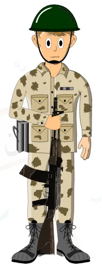
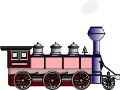
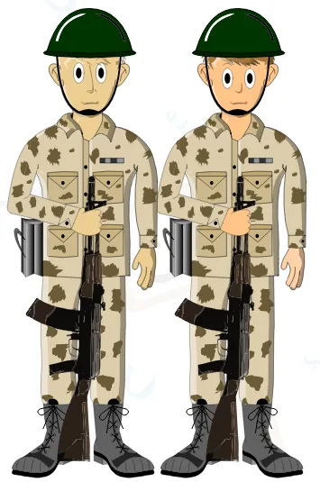
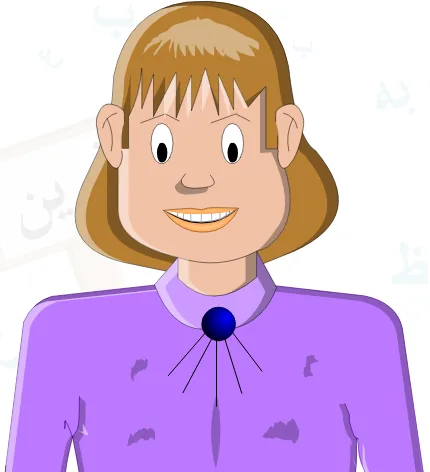
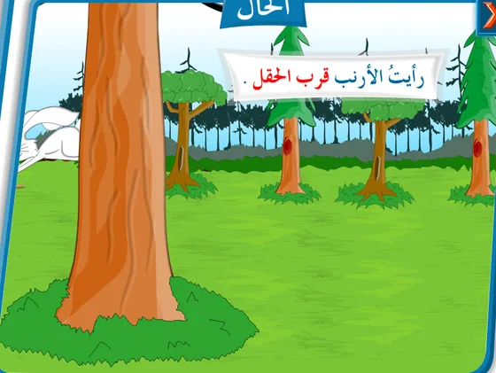
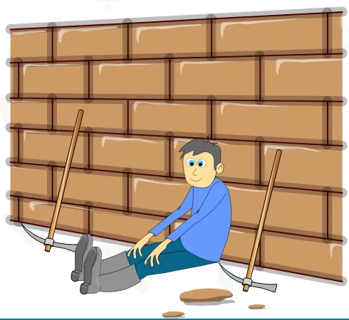

الحال المفردة والجملة الحالية
الدرس 4 من 6 — التراكيب
أُلاحظ
أقرأ الأمثلة وأستمع إليها، وألاحظ الكلمات الملوّنة.
- عَادَ الْجُنْدِيُّ مُنْتَصِرًا
- مَرَّ الْقِطَارُ مُسْرِعًا
- عَادَ الْجُنْدِيَّانِ مُنْتَصِرَيْنِ
- عَادَ الْجُنُودُ مُنْتَصِرِينَ
أستنتج
الحالاسمٌ نكرةٌ منصوب يبيّن حالة صاحبه عند وقوع الفعل، ويُعرف بسؤال: كيف؟
منصوباضغط على الكلمة الملوّنة لترى إعرابها، وعلى 🔊 لتستمع.

عَادَ الْجُنْدِيُّ مُنْتَصِرًا
أحكام الحال
- يكون صاحب الحال معرفة، بينما يكون الحال نكرة.

مَرَّ الْقِطَارُ مُسْرِعًا - يأتي صاحب الحال فاعلاً أو مفعولاً به: عَادَ الْجُنْدِيُّ مُنْتَصِرًا، رَأَيْتُ الطِّفْلَ بَاكِيًا.
- تطابق الحال صاحبها في الإفراد والتثنية والجمع:

عَادَ الْجُنْدِيَّانِ مُنْتَصِرَيْنِعَادَ الْجُنُودُ مُنْتَصِرِينَ - وتطابقه في التذكير والتأنيث:جَاءَ الْوَلَدُ مَسْرُورًا.

جَاءَتِ الْفَتَاةُ مَسْرُورَةً
تأتي الحال في ثلاث صور
- اسم مفرد جَاءَ الْوَلَدُ مَسْرُورًا.
- شبه جملة ظرفية أو جارّاً ومجروراً.

رَأَيْتُ الْأَرْنَبَ قُرْبَ الْحَقْلِقال تعالى: «فَخَرَجَ عَلَى قَوْمِهِ فِي زِينَتِهِ» (القصص: 79). - جملة اسمية أو فعلية.ذَهَبْنَا إِلَى الرِّحْلَةِ وَالْجَوُّ مُعْتَدِلٌجَلَسَ الْعَامِلُ يَتَصَبَّبُ عَرَقًا
إذا وقعت الحال جملةً فلا بدّ لها من رابطٍ يربطها بصاحب الحال: واو الحال (ذَهَبْنَا إِلَى الرِّحْلَةِ وَالْجَوُّ مُعْتَدِلٌ)، أو الضمير (جَلَسَ الْعَامِلُ يَتَصَبَّبُ عَرَقًا)، أو الواو والضمير معاً (جَلَسَ الْعَامِلُ وَهُوَ يَتَصَبَّبُ عَرَقًا).

جَلَسَ الْعَامِلُ وَهُوَ يَتَصَبَّبُ عَرَقًا
أُطبّق
1الحال في: «دَخَلَ التِّلْمِيذُ الْقِسْمَ مُبْتَسِمًا»
2صاحب الحال في: «شَرِبْتُ الْمَاءَ بَارِدًا»
3اختر الحال المناسبة: «رَجَعَتِ الْبِنْتَانِ مِنَ الْمَدْرَسَةِ …»
4نوع الحال في: «رَأَيْتُ الْعُصْفُورَ فَوْقَ الْغُصْنِ»
5نوع الحال في: «أَقْبَلَ الطِّفْلُ يَضْحَكُ»
6الحال تكون في الغالب:
7ما إعراب «منتصراً» في: «عَادَ الْجُنْدِيُّ مُنْتَصِرًا»؟
8ما إعراب «مسرعاً» في: «مَرَّ الْقِطَارُ مُسْرِعًا»؟
إجابات صحيحة من أول محاولة:
أتمرّن أكثر
أستمع، ثمّ أرتّب الكلمات لأكوّن الجملة:
أستمع، ثمّ أكتب ما أسمع:
✓ أنهيتَ هذا الدرس
دروس العربية — للاستعمال التعليمي.